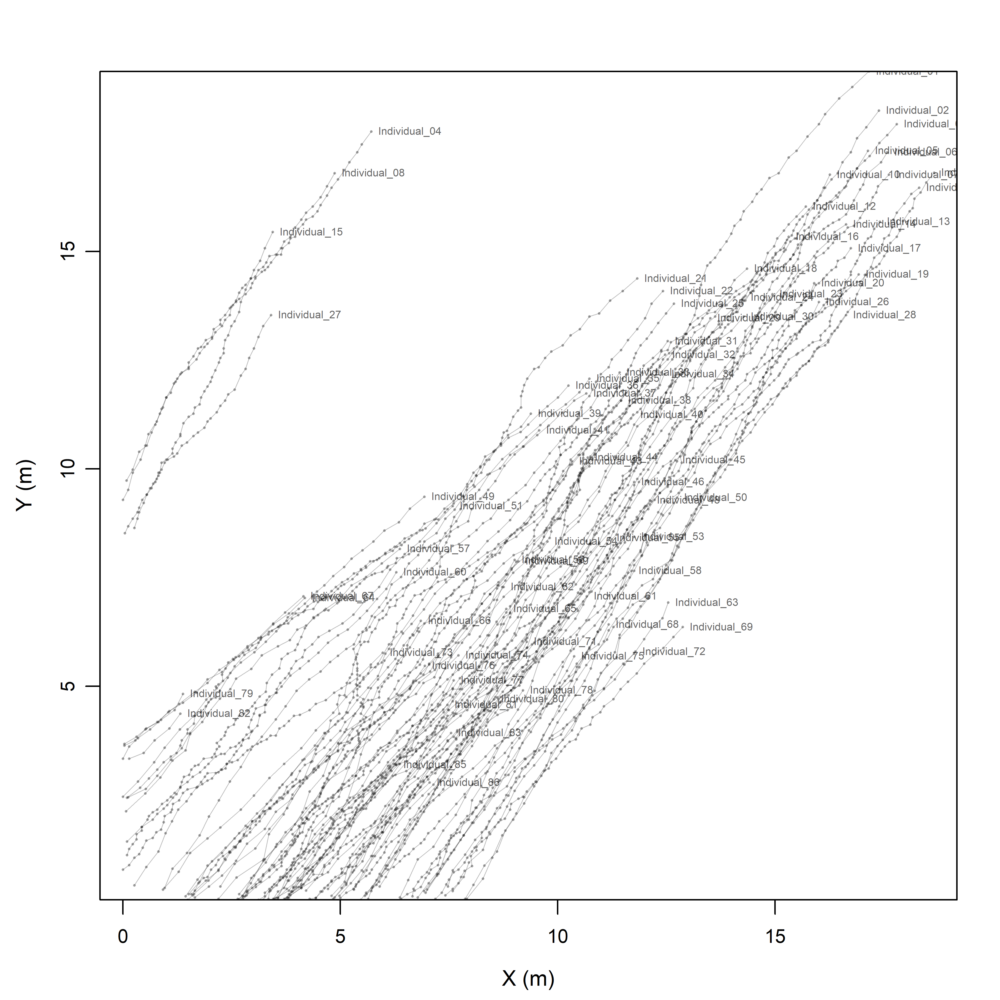
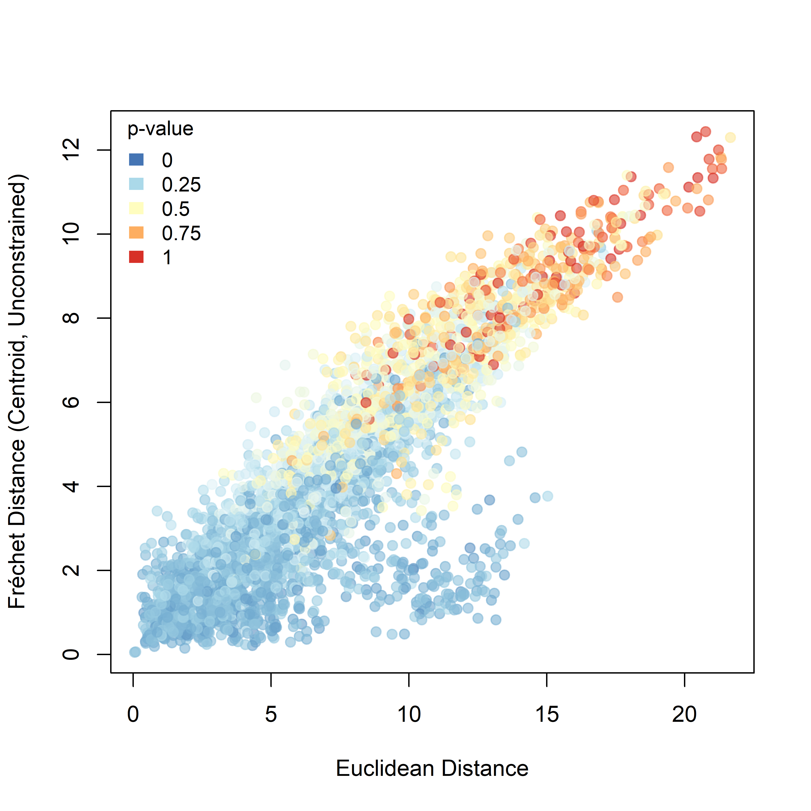

Evaluating trajectory-based signatures of coordinated movement with QuAnTeTrack
Humberto G. Ferrón
Source:vignettes/articles/QuAnTeTrack_validation_article.Rmd
QuAnTeTrack_validation_article.Rmd
Rationale
This vignette provides an initial empirical validation of the assumptions underlying QuAnTeTrack for detecting coordinated or gregarious movement from trackway-derived trajectories. The main goal is to test whether the movement patterns that the package is designed to detect are effectively recovered in a modern biological system with observable group behaviour.
Assumptions underlying coordinated movement detection
QuAnTeTrack is based on the premise that coordinated group movement should leave non-random signatures in the geometry and spatial relationships of individual trajectories. In particular, two main expectations are considered.
Trajectory covariation
In coordinated groups, individual trajectories are expected to be more similar to one another than expected by chance. This similarity may arise because individuals move with shared orientation, similar turning behaviour, common displacement trends, or sustained spatial coordination through time.
In QuAnTeTrack, trajectory similarity is quantified using two complementary distance-based approaches: Dynamic Time Warping (DTW) and Fréchet distance. Although both are designed to compare trajectories, they capture different aspects of path similarity and are therefore informative in different ways.
Dynamic Time Warping measures similarity between trajectories by allowing flexible matching between points along two paths, even when movement along those paths occurs at different local rates. In practice, DTW aligns trajectories by “warping” their progression so that sections that are geometrically similar can be matched even if one individual moved faster, slower, or paused relative to another. This makes DTW especially useful when two individuals follow broadly similar routes but differ in the timing or pacing of their movement. As a result, DTW is well suited to detecting coordinated movement patterns in which individuals share a common directional or geometric structure without requiring strict synchrony in position through time.
By contrast, the Fréchet distance quantifies the similarity between two trajectories while preserving the sequential order of points along each path and explicitly considering the geometry of the full curve. It is often intuitively described as the minimum leash length required for a person and a dog to traverse two separate paths from start to finish without backtracking. Unlike simpler pointwise comparisons, the Fréchet distance is sensitive not only to proximity between trajectories but also to their overall shape and ordering in space. This makes it particularly useful for evaluating how similarly two individuals moved through the landscape when the geometric form of their paths is of primary interest.
These two metrics are complementary. DTW is more tolerant of local differences in movement rate and is therefore particularly effective for identifying similar trajectory structure despite temporal mismatch. Fréchet distance, in contrast, provides a stricter assessment of the geometric resemblance between complete paths and is more sensitive to deviations in trajectory shape. Used together, they provide a robust framework for evaluating whether trajectories within a group exhibit non-random covariation.
In QuAnTeTrack, these distances are implemented in
simil_DTW_metric() and simil_Frechet_metric()
functions.
By comparing the observed pairwise distances among trajectories with appropriate null expectations, QuAnTeTrack can be used to test whether individuals in a putatively coordinated group moved in a more similar way than expected under random or non-coordinated movement scenarios.
Non-random trajectory intersection patterns
Coordinated movement may also produce characteristic patterns of trajectory intersection depending on the relative positioning of individuals within the group.
Two broad expectations are considered:
- Higher intersection frequencies in front-behind configurations, such as queueing, following, or pursuit-like movement.
- Lower intersection frequencies in side-by-side configurations, such as parallel displacement or coordinated lateral movement.
In QuAnTeTrack, these patterns are evaluated through
trajectory intersection counts using track_intersection()
function.
Theoretical and empirical support for coordinated trajectory patterns
These assumptions are consistent with a broad body of theory and empirical work in movement ecology, collective behaviour, and self-organized motion. Coordinated movement is generally understood as a form of non-independent displacement, in which individuals adjust headings, speeds, and turning behaviour in response to neighbours.
Under this framework, coordinated groups are expected to produce structured covariation in movement trajectories rather than chance resemblance, because alignment, attraction–repulsion, leadership, and neighbour-dependent interactions generate correlated motion through time (Vicsek et al. 1995; Couzin et al. 2002; Sumpter 2006). This expectation is supported both empirically and theoretically. Empirical studies of collective movement consistently show that coordinated groups exhibit non-random similarity in direction, displacement, and movement dynamics, whereas theoretical and modelling approaches demonstrate that local interaction rules are sufficient to generate coherent, correlated motion at the group level (Sumpter 2006; Cavagna et al. 2010; Herbert-Read et al. 2011; Katz et al. 2011; Attanasi et al. 2014). In parallel, the movement-analysis literature explicitly treats correlated movement as a measurable signature of joint behaviour and emphasizes the importance of comparing observed similarity against null expectations in order to distinguish true coordination from chance resemblance or shared environmental constraints (Long et al. 2014; Spiegel et al. 2016; Joo et al. 2018).
A second expectation concerns trajectory intersection patterns, which should depend on the spatial geometry of the moving group. In front–behind configurations, such as queueing, following, or pursuit-like movement, individuals repeatedly use the same corridor or path axis, which should increase spatial overlap and the likelihood of trajectory intersections. By contrast, in side-by-side or laterally offset configurations, individuals maintain parallel or quasi-parallel displacement while preserving lateral spacing, which should reduce overlap and lower the probability of crossings. This expectation is likewise supported by both empirical observations and theoretical models. Across studies of coordinated movement and traffic-like collective systems, front–behind organization is associated with repeated use of shared space, whereas side-by-side or lane-like organization is associated with spatial segregation and reduced conflict. The same general pattern emerges from self-organization theory and collective-motion models, which show that interaction rules can produce either shared-path use or parallel spatial structuring depending on the geometry of neighbour interactions (Helbing & Vicsek 1999; Czaczkes et al. 2015; Feliciani and Nishinari 2016; Burger et al. 2016; Mullick et al. 2022). Importantly, the literature does not always quantify geometric trajectory intersections directly. Instead, related measures such as shared path use, trail fidelity, encounter rates, collisions, or collision-avoidance manoeuvres are often used to describe the same underlying spatial principle. Even so, these measures support the general expectation that front–behind organization channels movement into shared space, whereas side-by-side organization segregates movement and reduces crossing or conflict.
Taken together, the literature supports the use of both trajectory covariation and trajectory intersection structure as biologically meaningful signatures of coordinated movement. Covariation reflects the non-independence generated by alignment, following, and neighbour-mediated responses, whereas intersection patterns reflect the spatial geometry of relative positioning within the moving group. Considered jointly, these expectations provide a movement-ecology basis for evaluating whether a set of trajectories is consistent with coordinated, non-random collective displacement.
Aim of this validation vignette
To evaluate these assumptions in a modern analogue, we analysed the movement of a herd of domestic sheep recorded under open-field conditions. The validation pipeline tests whether observed sheep trajectories show:
- greater pairwise similarity than expected under null movement simulations,
- non-random intersection patterns consistent with coordinated movement,
- and graph/network structures consistent with cohesive group displacement.
This vignette therefore provides a first proof of concept that the movement signatures targeted by QuAnTeTrack can be recovered in an extant group with biologically interpretable collective behaviour.
Materials and methods
Study system
The validation dataset was obtained from a herd of domestic sheep. Sheep provide a suitable modern analogue for this purpose because they are strongly gregarious animals that commonly move as cohesive groups under naturalistic conditions, without the need for experimental manipulation.
This system is particularly useful for validation because multiple individuals can be tracked simultaneously from aerial footage, group-level displacement is readily identifiable, and spatial relationships among individuals can be directly observed through time. As a result, sheep herds offer a tractable extant model in which coordinated movement can be documented and compared against the expectations implemented in QuAnTeTrack.
More broadly, this study system combines several advantages for validation, including clear group structure, minimal observer disturbance, and a realistic behavioural setting in which collective motion emerges naturally.
Data acquisition
Filming location, permissions and setup
The herd was recorded in an open farm setting near Santa María de Navas, in the province of Badajoz (Extremadura, southwestern Spain). Recording was conducted with the explicit permission of the landowner and involved no disturbance, handling, or experimental manipulation of the animals. The study therefore conforms to the ethical requirements generally applicable to non-invasive observational research under field conditions.
The herd was filmed using a DJI Mini 4 Pro drone during a static aerial recording session. The camera was oriented orthogonally to the ground surface (i.e., 90° downward), allowing the animals to be recorded from a near-vertical perspective and minimizing perspective-related distortion during subsequent trajectory extraction. The drone remained in a stable hovering position throughout filming in order to reduce camera-induced variation in reconstructed paths. In addition, the DJI Mini 4 Pro integrates a stabilized camera/gimbal system designed to maintain image stability during flight.
The analysed footage was recorded at a resolution of 3840 × 2160 px and a frame rate of 29.97 fps, using HEVC / H.265 video encoding. The DJI Mini 4 Pro is equipped with a 1/1.3-inch CMOS sensor, a 24 mm equivalent lens, and an f/1.7 aperture. Embedded metadata visible in the recording indicate the following camera settings for the analysed footage: ISO 100, shutter speed 1/2500 s, f/1.7, EV 0, and 24 mm focal length equivalent. The same metadata also indicate a relative flight altitude of 56.4 m above the take-off point. The recording analysed here was acquired on 11 April 2025 at 13:42 local time.
Weather conditions during filming were sunny, with very weak wind (light breeze, estimated at < 5 km h⁻¹). These conditions were favourable for aerial observation because they provided high visibility and limited drone drift during acquisition.
Given the static nadir-view geometry, stable flight conditions, and onboard camera stabilization, the footage provides a suitable basis for extracting planar movement trajectories from the herd.
The animals moved in an open and topographically unconstrained environment. This is important because it reduces the possibility that movement geometry was artificially imposed by strong physical constraints such as narrow paths, fences, corridors, or bottlenecks.
The scene was scaled a posteriori once the herd had left the filmed area. A coloured bar of known length was then placed on the ground while the drone was kept in the same fixed position, allowing image distances to be converted into real-world spatial units under the same viewing geometry as the original recording.
From video to trajectories
Frame extraction
The original aerial recording was decomposed into a sequence of still frames prior to digitization. Frames were extracted at a rate of 2 frames per second, corresponding to one image every 0.5 s, and a total of 77 frames were used in the validation workflow.
The temporal interval between sampled frames was selected to provide a practical approximation to the average step cycle of sheep, so that consecutive positions would be spaced in a way broadly comparable to the stride-based sampling logic commonly used in trackway analyses. This choice was not intended to imply that sheep move with perfectly regular step timing, but rather to generate a biologically meaningful temporal discretization for an initial validation exercise.
Because step timing and speed vary among individuals and through time, the selected sampling rate should be regarded as an informed approximation rather than an exact representation of step periodicity. A formal sensitivity analysis exploring the effect of alternative frame intervals would be desirable in future work. Nevertheless, the chosen interval provides a reasonable and operational starting point for evaluating whether QuAnTeTrack is able to recover non-random movement structure in a modern gregarious system.
Digitization and TPS generation
Each extracted frame was digitized in TPS format by recording the positions of individual sheep through the image sequence. These digitized positions were initially stored as individual TPS files and subsequently merged into a single consolidated trajectory file using a custom preprocessing routine.
This custom step was designed to standardize formatting and ensure compatibility with downstream import into QuAnTeTrack. In particular, the routine safely handled different text encodings, parsed landmark blocks across files, extracted coordinate and image metadata, normalized decimal separators when necessary, replaced spaces in IDs with underscores, and concatenated all valid coordinates associated with each individual into a single TPS block.
Trajectories represented by fewer than five recorded positions were excluded from the final merged dataset in order to avoid the inclusion of extremely short or poorly sampled tracks. A per-file summary table was also generated during preprocessing to document which digitized files were retained and which were discarded.
The result of this stage was a single standardized TPS file containing all retained trajectories and ready for import into QuAnTeTrack.
Trajectory construction in QuAnTeTrack
The merged TPS dataset was then imported into
QuAnTeTrack, where the digitized coordinate sequences
were converted into a track object containing both
footprint-level information and reconstructed trajectories. Coordinates
were transformed from image units into real-world units using a scaling
factor of 0.012 m per pixel, derived from the
calibration procedure described above.
The import procedure was configured using an alternating right/left side pattern of length 81, matching the structure of the validation dataset used in the analysis script. In the resulting object, each retained sheep was represented as an individual trajectory within a common spatial framework, allowing all paths to be analysed jointly and compared directly.
Not all individuals were necessarily visible throughout the full duration of the recording, and trajectory length was therefore not assumed to be identical across sheep. Incomplete trajectories were retained provided that they met the minimum requirement of five recorded positions during preprocessing. Tracks shorter than this threshold were removed before analysis.
This procedure yielded a set of comparable, scaled movement paths for
the herd, all expressed in the same spatial reference frame and linked
to a common sequence of sampled video frames. A general overview of the
extracted trajectories was then produced from the imported
track object to visualize overall herd structure,
trajectory geometry, and the first recorded position of each individual
prior to formal analysis.
QuAnTeTrack analyses
Similarity metrics
Trajectory similarity was evaluated using two complementary
distance-based measures implemented in QuAnTeTrack:
Dynamic Time Warping (simil_DTW_metric())
and Fréchet distance
(simil_Frechet_metric()). Both metrics quantify the extent
to which individual movement paths resemble one another, but they
emphasize different properties of trajectory geometry. DTW is more
tolerant of local differences in pace or temporal alignment, whereas
Fréchet distance is more sensitive to the overall geometric similarity
of the paths.
All similarity analyses were conducted under centroid superposition. This standardization centres trajectories prior to comparison and therefore focuses the analysis on path geometry rather than absolute position within the scene. The objective was to determine whether the observed sheep trajectories were more similar to one another than expected under the null model.
For each metric, the workflow produced an observed pairwise distance matrix among trajectories together with the corresponding pairwise significance matrix obtained by comparison with the simulated dataset. In addition, the observed similarity values were related to the Euclidean distance between the first recorded positions of individuals, allowing the relationship between initial spatial proximity and subsequent path similarity to be explored.
Intersection metrics
Trajectory intersections were analysed using
track_intersection(). This analysis was designed to test
whether the observed frequency and structure of intersections among
trajectories were consistent with non-random spatial organization within
the herd.
Because different coordinated movement configurations can generate opposite intersection expectations, two alternative one-tailed hypotheses were evaluated separately. Under the Lower hypothesis, the analysis tests whether individuals show fewer intersections than expected under the null model, as might be expected for side-by-side or broadly parallel movement. Under the Higher hypothesis, the analysis tests whether individuals show more intersections than expected, as might occur in front–behind configurations, following behaviour, or queue-like displacement.
For each hypothesis, the workflow generated an observed intersection matrix together with the corresponding pairwise significance values. These results were subsequently related to pairwise geometric summaries in order to assess how intersection structure varied with spacing and relative configuration within the herd.
Null expectations
Observed trajectories were contrasted against null expectations
generated with simulate_track() under the
Unconstrained model. A total of 100
simulations were produced and used as the reference
distribution for all downstream significance tests.
This null model provided the baseline against which the observed DTW, Fréchet, and intersection statistics were evaluated. In practical terms, it represents a movement scenario lacking the coordinated spatial structure expected in a genuinely gregarious group. The same simulation object was used throughout the similarity and intersection analyses, ensuring that all significance estimates were derived from a common null framework.
Combined evidence
To assess whether multiple metrics converged on the same pairwise
signal of coordinated movement, combined significance analyses were
performed using combined_prob(). These analyses integrated
evidence from several metrics for each pair of trajectories under the
same directional intersection hypothesis.
Three centroid-based combinations were evaluated separately for the Lower and Higher hypotheses: Intersection + Fréchet, Intersection + DTW, and Intersection + Fréchet + DTW. For each combination, the workflow generated combined pairwise significance matrices. These analyses were intended to evaluate whether support for non-random association became stronger when multiple trajectory-based signals were considered jointly rather than in isolation.
Exploratory visualization and data export
In addition to the main statistical outputs, the workflow generated a series of exploratory visualizations and auxiliary data products to facilitate interpretation. These included an overview plot of all reconstructed trajectories, pairwise scatterplots relating initial Euclidean spacing to DTW or Fréchet distance, and scatterplots relating pairwise significance values to two geometric summaries: the Euclidean distance between the first recorded positions of each pair of individuals and the angular difference between their relative initial configuration and their mean movement heading.
These plots were used to visualize how pairwise support for coordinated movement varied as a function of both initial spacing and relative orientation within the herd.
All intermediate objects, statistical results, pairwise data tables,
and figure files were saved automatically to a structured directory
tree. This ensured that the workflow remained fully reproducible and
that individual steps could be re-examined or reused during subsequent
figure selection and synthesis. All code used for these analyses,
together with the associated input and helper files, is provided in the
/scripts/ folder.
3. Results
3.1. General trajectory structure
The reconstructed trajectories show a clearly coherent herd-level displacement pattern, with most individuals moving along a common directional axis and maintaining a broadly aligned configuration through time. Rather than forming a dispersed or isotropic cloud, the paths are strongly anisotropic and dominated by subparallel movement trends. This indicates that the herd behaved as a coordinated moving group rather than as a set of independently wandering individuals.
Although the trajectories are not identical, most paths overlap extensively in directional space. Some local heterogeneity is present in curvature, spacing, and total path length, as expected in a real herd in which movement coordination emerges from local interactions rather than from strict geometric synchrony. A smaller number of more peripheral trajectories occur toward the margins of the plot, but these generally follow the same large-scale directional trend as the main body of the herd.

General overview of the filmed herd and the extracted trajectories. Semi-transparent lines represent individual sheep paths reconstructed from the digitized frame sequence, and labels indicate the first recorded position of each trajectory.
3.2. Trajectory similarity
Both trajectory similarity metrics indicate that the observed sheep paths were more structured than expected under the unconstrained null model, although the form of this relationship differs between DTW and Fréchet distance.
For DTW, pairwise trajectory distance increases overall with the Euclidean distance between the first recorded positions of individuals, but the relationship is broad and non-linear. The point cloud forms a wedge-shaped distribution in which short to intermediate initial distances are associated with a wide range of DTW values, whereas more distant pairs tend to show larger DTW distances. Low p-values are distributed across much of the cloud, indicating widespread non-random similarity among observed trajectories relative to the simulated baseline (Figure X).
{r dtw_centroid_vs_euclidean_coloured_by_pvalRAW_nsim100, echo=FALSE, out.width="85%", fig.align="center", fig.cap="Pairwise DTW distance plotted against the Euclidean distance between the first recorded positions of individuals. Point colour represents the raw pairwise significance value relative to the unconstrained null model."} knitr::include_graphics("figures/dtw_centroid_vs_euclidean_coloured_by_pvalRAW_nsim100.png")
For Fréchet distance, the relationship with initial Euclidean spacing is more regular and more nearly linear. As the initial separation between sheep increases, Fréchet distance also tends to increase, indicating that more spatially distant pairs generally occupy more distinct trajectory geometries. Compared with DTW, the Fréchet signal is more orderly and shows a broader gradient of p-values across the dataset (Figure X).

{r frechet_centroid_vs_euclidean_coloured_by_pvalRAW_nsim100, echo=FALSE, out.width="85%", fig.align="center", fig.cap="Pairwise Fréchet distance plotted against the Euclidean distance between the first recorded positions of individuals. Point colour represents the raw pairwise significance value relative to the unconstrained null model."} knitr::include_graphics("figures/frechet_centroid_vs_euclidean_coloured_by_pvalRAW_nsim100.png")
3.3. Intersection structure
The intersection analyses reveal different patterns under the two directional hypotheses.
Under the Higher hypothesis, the lowest p-values are concentrated mainly among dyads with small angular differences, across a relatively broad range of Euclidean distances. This indicates that elevated intersection structure is associated primarily with pairs whose relative configuration is aligned with the main direction of displacement (Figure X).
{r frechet_centroid_vs_euclidean_coloured_by_pvalRAW_nsim100, echo=FALSE, out.width="85%", fig.align="center", fig.cap="Pairwise significance for the Higher-intersection hypothesis plotted against initial Euclidean spacing and angular difference."} knitr::include_graphics("figures/scatter_angleDelta_vs_euclid_pvalueRAW_ALL_H1-Higher_nsim100.png")
Under the Lower hypothesis, the signal is weaker, but the lowest p-values tend to occur among nearby dyads with larger angular differences. In other words, reduced intersection structure is most evident among some pairs that were both spatially close and more laterally arranged relative to their mean direction of movement (Figure X).
{r frechet_centroid_vs_euclidean_coloured_by_pvalRAW_nsim100, echo=FALSE, out.width="85%", fig.align="center", fig.cap="Pairwise significance for the Lower-intersection hypothesis plotted against initial Euclidean spacing and angular difference."} knitr::include_graphics("figures/scatter_angleDelta_vs_euclid_pvalueRAW_ALL_H1-Lower_nsim100.png")
Taken together, the two intersection analyses show that intersection
structure varies systematically with pairwise geometric configuration
rather than being randomly distributed across the herd.
3.4. Combined metrics
The combined analyses integrate trajectory similarity and intersection information and therefore provide a more specific view of pairwise movement structure.
For the DTW-based combinations, the overall pattern remains strongly influenced by the widespread DTW similarity signal. Under the Higher hypothesis, the lowest combined p-values are still concentrated mainly among dyads with small angular differences, whereas under the Lower hypothesis the contrast is less pronounced (Figure X).

Combined significance for Intersection + DTW under the Higher-intersection hypothesis.
For the Fréchet-based combinations, the effect of adding intersection information is more clearly structured. Under the Higher hypothesis, the strongest combined support is concentrated among dyads with low angular differences. Under the Lower hypothesis, stronger support occurs mainly among nearby dyads with broader angular configurations (Figure X).


Overall, the combined analyses show that pairwise support for coordinated movement is not uniformly distributed across the herd, but instead varies with both initial spacing and relative configuration.
4. Discussion and future directions
4.1. What this validation supports
This validation provides an initial empirical test of whether the assumptions implemented in QuAnTeTrack recover biologically meaningful movement patterns in a modern gregarious system. Overall, the results support that conclusion.
First, the general trajectory overview shows that the sheep herd did not move as a set of independent, spatially unstructured paths. Instead, the trajectories display clear herd-level cohesion, a shared axis of displacement, and substantial overlap in directional space. This provides the basic biological context in which one would expect non-random covariation among trajectories.
Second, both DTW and Fréchet analyses recovered widespread evidence of trajectory similarity exceeding null expectations. This supports the first major assumption of the package: that coordinated movement should generate path covariation detectable through trajectory similarity metrics. At the same time, the two metrics did not behave identically. DTW produced a broader and more pervasive signal of similarity, whereas Fréchet yielded a more structured geometric gradient. This difference is encouraging rather than problematic, because it suggests that the two metrics capture complementary aspects of coordinated movement rather than redundant information.
Third, the intersection analyses support the second major assumption of the package: that different relative spatial arrangements can produce contrasting intersection patterns. Pairs aligned more closely with the direction of displacement tended to show stronger support under the Higher intersection hypothesis, whereas nearby laterally arranged pairs tended to show comparatively more support under the Lower hypothesis. Although the latter signal was weaker, the overall direction of the pattern is biologically coherent and matches the behavioural expectations laid out in the rationale.
Fourth, the combined analyses demonstrate the practical value of integrating trajectory similarity with intersection structure. Similarity alone can identify pairs moving in comparable ways, but similarity plus intersection information provides a more refined basis for distinguishing between alternative movement configurations, such as front–behind versus side-by-side associations. In this dataset, that integrative signal was especially clear in the Fréchet-based combinations, where intersection information sharpened the geometric structure of the result.
Taken together, these results show that QuAnTeTrack does not merely detect that movement is non-random. Rather, it recovers multiple, behaviourally interpretable signatures of coordinated group displacement and uses them in a way that is consistent with the known logic of collective movement in a modern herd.
4.2. Current limitations
Several limitations should nevertheless be acknowledged.
4.2.1. Biological scope
This validation is based on a single extant study system and therefore does not yet capture the full diversity of coordinated movement patterns that may occur across taxa, ecological settings, or locomotor modes. A domestic sheep herd is a useful and tractable model for gregarious displacement, but it represents only one region of the broader behavioural space that QuAnTeTrack is intended to address.
4.2.2. Frame sampling interval
The temporal spacing between analysed frames was selected as a practical approximation to sheep step length, but real step timing is not constant among individuals or through time. Different frame extraction intervals could alter trajectory density, inferred path geometry, and the relative strength of downstream similarity and intersection metrics. The present results should therefore be interpreted as conditional on this specific temporal sampling choice.
4.2.3. Landmarking and digitization effects
The trajectories analysed here depend on manual digitization of individual positions across frames. As in any landmark-based workflow, this introduces the possibility of observer error, especially in dense group contexts, partially overlapping animals, or frames in which body orientation is difficult to interpret. Such uncertainty could affect reconstructed trajectories and, by extension, the pairwise metrics derived from them.
4.2.4. Null model dependence
Interpretation also depends partly on the selected null framework. In this vignette, significance was assessed relative to trajectories simulated under the Unconstrained model. This provides a reasonable first baseline, but alternative null structures could capture different aspects of non-coordinated movement and might lead to different levels of contrast with the observed data. The conclusions presented here therefore validate the performance of QuAnTeTrack under one explicit null scenario rather than exhaustively across all possible baselines.
4.3. Future validation scenarios
Future work should expand validation across a wider range of movement contexts and biological systems. Particularly informative scenarios would include: - side-by-side parallel movement, - queueing or following behaviour, - pursuit dynamics, - groups with explicit leadership structure, - taxa with different body sizes or locomotor modes, - and settings with stronger environmental or topographic constraints.
Additional sensitivity analyses would also strengthen the framework. In particular, it would be valuable to evaluate: - the effect of frame extraction interval, - the effect of landmarking uncertainty, - the effect of incomplete trajectories, - the effect of sample size and group density, - and the performance of alternative null models.
More broadly, a desirable next step would be to validate the package across multiple extant systems that differ predictably in their style of coordination. Such comparisons would make it possible to determine whether specific combinations of similarity and intersection signals are consistently associated with particular collective configurations. This would substantially improve the interpretive power of QuAnTeTrack when applied to fossil trackway data, where behavioural inference necessarily depends on linking trajectory geometry to well-supported modern analogues.
5. Reproducibility and supplementary material
The main analytical workflow is outlined in this vignette. Full code used for preprocessing, frame extraction, TPS conversion, simulation, and figure generation is provided as supplementary material.
[Insert here how the supplementary code is organized, e.g. scripts, folders, external files, or repository links.]
References
Attanasi, A., Cavagna, A., Del Castello, L., Giardina, I., Jelić, A., Melillo, S., Parisi, L., Pohl, O., Shen, E., & Viale, M. (2014). Information transfer and behavioural inertia in starling flocks. Nature Physics, 10, 691–696. https://doi.org/10.1038/nphys3035
Burger, M., Hittmeir, S., Ranetbauer, H., & Wolfram, M.-T. (2016). Lane formation by side-stepping. SIAM Journal on Mathematical Analysis, 48(2), 981–1005. https://doi.org/10.1137/15M1033174
Cavagna, A., Cimarelli, A., Giardina, I., Parisi, G., Santagati, R., Stefanini, F., & Viale, M. (2010). Scale-free correlations in starling flocks. Proceedings of the National Academy of Sciences, 107(26), 11865–11870. https://doi.org/10.1073/pnas.1005766107
Couzin, I. D., Krause, J., Franks, N. R., & Levin, S. A. (2002). Collective memory and spatial sorting in animal groups. Journal of Theoretical Biology, 218(1), 1–11. https://doi.org/10.1006/jtbi.2002.3065
Czaczkes, T. J., Grüter, C., & Ratnieks, F. L. W. (2015). Trail pheromones: an integrative view of their role in social insect colony organization. Annual Review of Entomology, 60, 581–599. https://doi.org/10.1146/annurev-ento-010814-020627
Feliciani, C., & Nishinari, K. (2016). Empirical analysis of the lane formation process in bidirectional pedestrian flow. Physical Review E, 94, 032304. https://doi.org/10.1103/PhysRevE.94.032304
Herbert-Read, J. E., Perna, A., Mann, R. P., Schaerf, T. M., Sumpter, D. J. T., & Ward, A. J. W. (2011). Inferring the rules of interaction of shoaling fish. Proceedings of the National Academy of Sciences, 108(46), 18726–18731. https://doi.org/10.1073/pnas.1109355108
Helbing, D., & Vicsek, T. (1999). Optimal self-organization. New Journal of Physics, 1, 13. https://doi.org/10.1088/1367-2630/1/1/313
Joo, R., Boone, M. E., Clay, T. A., Patrick, S. C., Clusella-Trullas, S., & Basille, M. (2018). Metrics for describing dyadic movement: a review. Movement Ecology, 6, 26. https://doi.org/10.1186/s40462-018-0144-2
Katz, Y., Tunstrøm, K., Ioannou, C. C., Huepe, C., & Couzin, I. D. (2011). Inferring the structure and dynamics of interactions in schooling fish. Proceedings of the National Academy of Sciences, 108(46), 18720–18725. https://doi.org/10.1073/pnas.1107583108
Long, J. A., Nelson, T. A., Webb, S. L., & Gee, K. L. (2014). A critical examination of indices of dynamic interaction for wildlife telemetry studies. Journal of Animal Ecology, 83(5), 1216–1233. https://doi.org/10.1111/1365-2656.12198
Mullick, P., Fontaine, S., Appert-Rolland, C., Olivier, A.-H., Warren, W. H., & Pettré, J. (2022). Analysis of emergent patterns in crossing flows of pedestrians reveals an invariant of ‘stripe’ formation in human data. PLOS Computational Biology, 18(6), e1010210. https://doi.org/10.1371/journal.pcbi.1010210
Spiegel, O., Leu, S. T., Sih, A., & Bull, C. M. (2016). Socially interacting or indifferent neighbours? Randomization of movement paths to tease apart social preference and spatial constraints. Methods in Ecology and Evolution, 7(8), 971–979. https://doi.org/10.1111/2041-210X.12553
Sumpter, D. J. T. (2006). The principles of collective animal behaviour. Philosophical Transactions of the Royal Society B: Biological Sciences, 361(1465), 5–22. https://doi.org/10.1098/rstb.2005.1733
Vicsek, T., Czirók, A., Ben-Jacob, E., Cohen, I., & Shochet, O. (1995). Novel type of phase transition in a system of self-driven particles. Physical Review Letters, 75(6), 1226–1229. https://doi.org/10.1103/PhysRevLett.75.1226